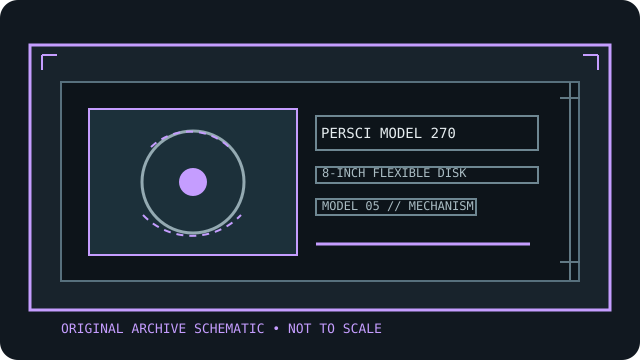

[ INDIVIDUAL COMPONENT // FLOPPY DRIVES ]
PerSci Model 270 8-inch dual diskette drive
This record identifies a real, model-specific 8-inch diskette mechanism. Format capacity and host fit depend on the documented revision, interface options, controller, recording mode, and media; values are not inferred from form factor alone.

IDENTIFICATION NOTE: PerSci Model 270 is a bare mechanism/drive model, not a generic PC floppy peripheral. Match the full label, PCB revision, connector and voltage configuration to the cited manual before connecting or servicing it.
Model specifications
| Catalog subcategory | 8-inch floppy mechanisms |
|---|---|
| Exact model / family | PerSci Model 270 8-inch dual diskette drive |
| Disk format and capacity | Two 8-inch diskette mechanisms in one dual-drive assembly. Product literature distinguishes unformatted and IBM-format capacity and optional density variants; bytes depend on model option and controller geometry, so record each mechanism/surface separately. |
| Host interface | PerSci 270-series host interface uses the model’s signal and power cabling described in the installation material; do not treat it as an unmodified Shugart-PC 34-pin drive. Follow the manual’s radial/daisy-chain host configuration. |
| Data rate | The model manual’s recording and controller tables define the transfer timing for the installed 270-series options. Match both mechanisms to the supported format; avoid inferring a rate from other PerSci models. |
| Drive select / jumpers | Check Model 270 series select switches/shunts and wiring tables. Assign distinct drive selects to each mechanism and confirm terminators, ready, and head-load behavior at the controller end. |
| Dimensions / mounting | The PerSci manual includes slide/rack mounting drawings for the dual-drive assembly. Read the frame-specific dimension figure and preserve airflow/clearance; do not use a single-mechanism envelope for the complete dual unit. |
| Power requirements | Requires the PerSci 270-series host power harness and documented rails/current. Use the model 270 pin-connection table and chassis-ground connection; do not energize using a PC floppy power lead. |
| Controller / host compatibility | Intended for a host/controller supporting PerSci 270-series signaling and supported 8-inch formats. Confirm whether host software sees one or two units and matches select, sectoring, and recording options. |
Model-specific compatibility checks
- Record the complete model suffix, serial/date code, board revision, connector keying, and all drive-select or option links before installation.
- Confirm controller signaling, line termination, host drive-select assignment, recording density, sector geometry, and the manual’s power connector pinout as a single compatible configuration.
- Do not connect by connector shape alone. An 8-inch drive may require non-PC signal conventions, additional DC rails, or a mains-rated supply; follow the model documentation.
Preservation and safety notes
The dual assembly contains two precision mechanisms and hazardous stored/live power may be present in its host supply. Disconnect power before service; inspect and document both drive labels and settings, and image original media without write-enable.
For archival work, preserve original media in its native format, make a verified read-only acquisition first, checksum retained copies, and log the drive, controller, software, media condition, and any service or conversion performed.
Manufacturer manuals & archive sources
- PerSci Models 270/272/277 Installation and Maintenance Manual (DeRamp archive)Model-family installation and maintenance manual covering dual-drive setup, cabling, power, mounting, and service.
- PerSci Model 270 Specifications (DeRamp archive)Model-specific specification scan for the dual 8-inch Model 270.
Consult the exact model/revision manual before applying electrical or service values. Family references are useful only where their coverage matches the marked unit.